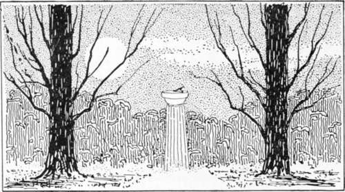

Embellishments. Part 3
Description
This section is from the book "Landscape Gardening", by Andrew Jackson Downing. Also available from Amazon: Landscape Gardening.
Embellishments. Part 3
The architectural flower-garden, as we have just remarked, has generally a direct connection with the house, at least on one side by the terrace. It may be of greater or less size, from twenty feet square to half an acre in extent. The leading characteristics of this species of flower-garden, arc the regular lines and forms employed in its beds and walks. The flowers are generally planted in beds in the form of circles, octagons, squares, etc., the center of the garden being occupied by an elegant vase, a sundial, or that still finer ornament, a fountain. In various parts of the garden, along the principal walks, or in the center of parterres, pedestals supporting vases, urns, or handsome flower-pots with plants, are placed. When a highly marked character of art is intended, a balustrade or parapet, resembling that of the terrace to which it is connected, is continued round the whole of this garden. Or in other cases the garden is surrounded by a thicket of shrubs and low trees, partly concealing it from the eye on all sides but one.
It is evident that the architectural flower-garden is superior to the general flower-garden, as an appendage to the house, on two accounts. First, because as we have already shown, it serves an admirable purpose in effecting a harmonious union between the house and the grounds. And secondly, because we have both the rich verdure and gay blossoms of the flowering plants, and the more permanent beauty of sculptured forms; the latter heightening the effect of the former by contrast, as well as by the relief they afford the eye in masses of light, amid surrounding verdure.
There are several varieties of general flower-gardens, which may be formed near the house. Among these we will only notice the irregular flower-garden, the old French flower-garden, and the modern or English flower-garden.
In almost all the different kinds of flower-gardens, two methods of forming the beds are observed. One is. to cut the beds out of the green turf, which is ever afterwards kept well-mown or cut for the walks, and the edges pared; the other, to surround the beds with edgings of verdure, as box, etc., or some more durable material, as tiles, or cut stone, the walks between being covered with gravel. The turf is certainly the most agreeable for walking upon in the heat of summer, and the dry part of the day; while the gravelled flower-garden affords a dry footing at nearly all hours and seasons.
Fig. 24. The Garden Sun Dial.
The irregular flower-garden * is surrounded by an irregular belt of trees and ornamental shrubs of the choicest species, and the beds are varied in outline, as well as irregularly disposed, sometimes grouping together, sometimes standing singly, but exhibiting no uniformity of arrangement.
This kind of flower-garden would be a suitable accompaniment to the house and grounds of an enthusiastic lover of the picturesque, whose residence is in the Rural Gothic style, and whose grounds are also eminently varied and picturesque. Or it might form a pretty termination to a distant walk in the pleasure-grounds, where it would be more necessary that the flower-garden should be in keeping with the surrounding plantations and scenery than with the house.
* This style of flower garden has gone completely out of fashion in America.—F. A. W.
Where the flower-garden is a spot set apart, of any regular outline, not of large size, and especially where it is attached directly to the house, we think the effect is most satisfactory when the beds or walks are laid out in symmetrical forms. Our reasons for this are these: the flower-garden, unlike distant portions of the pleasure-ground scenery, is an appendage to the house, seen in the same view or moment with it, and therefore should exhibit something of the regularity which characterizes, in a greater or less degree, all architectural compositions; and when a given scene is so small as to be embraced in a single glance of the eye, regular forms are found to be more satisfactory than irregular ones, which, on so small a scale, are apt to appear unmeaning.
The French flower-garden is the most fanciful of the usual modes of laying out the area devoted to this purpose. The patterns or figures employed are often highly intricate, and require considerable skill in their formation. The walks are either of gravel or smoothly shaven turf, and the beds are filled with choice flowering plants. It is evident that much of the beauty of this kind of flower-garden, or indeed any other where the figures are regular and intricate, must depend on the outlines of the beds, or parterres of embroidery, as they are called, being kept distinct and clear. To do this effectually, low growing herbaceous plants or border flowers, perennials and annuals, should be chosen, such as will not exceed on an average, one or two feet in height.
In the English flower-garden, the beds are either in symmetrical forms and figures, or they are characterized by irregular curved outlines. The peculiarity of these gardens, at present so fashionable in England, is, that each separate bed is planted with a single variety, or at most two varieties of flowers. Only the most striking and showy varieties are generally chosen, and the effect, when the selection is judicious, is highly brilliant. Each bed, in its season, presents a mass of blossoms, and the contrast of rich colors is much more striking than in any other arrangement. No plants are admitted that are shy bloomers, or which have ugly habits of growth, meagre or starved foliage; the aim being brilliant effect, rather than the display of a great variety of curious or rare plants. To bring this about more perfectly, and to have an elegant show during the whole season of growth, hyacinths and other fine bulbous roots occupy a certain portion of the beds, the intervals being filled with handsome herbaceous plants, permanently planted, or with flowering annuals and green-house plants renewed every season.
Continue to: